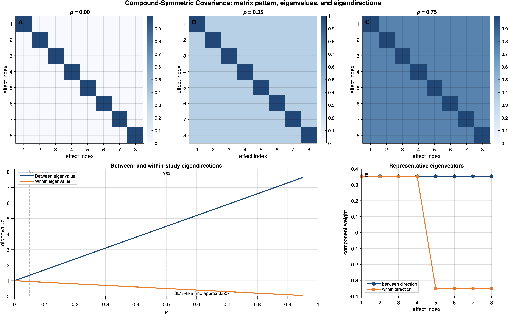

2 Model Definitions
This chapter provides the complete mathematical specification of every model that participates in the structural equivalence theory. We define the correlated-effects (CE) meta-analytic model, its survey counterpart, and the two extensions — the hierarchical-effects (HE) model and the correlated-and-hierarchical effects (CHE) model. For each model, we give the full likelihood, the relevant covariance structure, and (where applicable) the pseudo-likelihood and pseudo-posterior formulas. All notation follows the conventions established in Chapter 1.
Despite appearing as distinct models from different disciplines, the CE meta-analytic model and the survey pseudo-likelihood model share the same mathematical core: a normal Level 1 with cluster-specific error variances, a normal Level 2 with exchangeable random effects, and a compound-symmetric working covariance parameterized by \(\rho\). The structural equivalence theory of this book rests on this shared core. We define the meta-analytic and survey models in parallel, making the correspondence explicit at each step, before presenting the CHE extension that introduces within-study heterogeneity.
2.1 The Correlated-Effects (CE) Meta-Analytic Model
2.1.1 Definition 1: CE Working Model
Let \(y_{ij}\) denote the \(i\)th effect-size estimate from study \(j\), with known sampling variance \(s_{ij}^2\), for \(i = 1, \ldots, n_j\) and \(j = 1, \ldots, J\). A two-level hierarchical working model for the vector \(\mathbf{y}_j = (y_{1j}, \ldots, y_{n_j j})^{\intercal}\) is:
Level 1 (within study): \[ y_{ij} \mid \theta_j, \boldsymbol{\beta} \sim \textsf{N}\!\left(\mathbf{x}_{ij}^{\intercal}\boldsymbol{\beta} + \theta_j,\; \bar{s}_j^2\right), \quad i = 1, \ldots, n_j, \tag{2.1}\]
Level 2 (between studies): \[ \theta_j \mid \sigma^2_\theta \sim \textsf{N}(0,\, \sigma^2_\theta), \quad j = 1, \ldots, J, \tag{2.2}\]
where \(\mathbf{x}_{ij} \in \mathbb{R}^p\) is a vector of predictors (moderators) that may vary within or across studies, \(\bar{s}_j^2 = n_j^{-1}\sum_{i=1}^{n_j} s_{ij}^2\) is the average within-study sampling variance, and \(\sigma^2_\theta > 0\) is the between-study heterogeneity variance.
Several features of this definition merit careful commentary.
Conditional independence and the role of \(\rho\). Level 1 in Equation 2.1 is the independence working model (\(\rho = 0\)): given the random effects \(\theta_j\) and fixed effects \(\boldsymbol{\beta}\), observations within study \(j\) are conditionally independent. When \(\rho > 0\), the operative Gaussian working model is the clusterwise multivariate normal model induced by Definition 2. In that case, Level 1 should be read as specifying the mean vector and marginal scale, while the within-study dependence is supplied by \(\boldsymbol{\Sigma}_j^{\mathrm{work}}(\rho)\). Robust inference is obtained from the sandwich variance estimator rather than by claiming literal conditional independence when \(\rho>0\).
Broad CE definition. The CE model is defined by \(\omega^2 = 0\) (no within-study heterogeneity beyond sampling error), not by the covariate level. The predictor vector \(\mathbf{x}_{ij}\) may vary at the observation level within studies. The CE-vs-CHE distinction is about the variance structure (\(\omega^2 = 0\) vs \(\omega^2 > 0\)), not about whether covariates are study-level or observation-level (see Pustejovsky and Tipton 2022 for the working-model taxonomy).
Average sampling variance. The use of \(\bar{s}_j^2\) rather than \(s_{ij}^2\) at Level 1 reflects the compound-symmetry assumption: all effect sizes within a study are treated as having the same marginal sampling variance. When the individual variances \(s_{ij}^2\) are heterogeneous within study \(j\), this averaging introduces a working-model approximation. The sandwich variance protects against this misspecification.
Exchangeable random effects. Level 2 assumes that the study-specific true effects \(\theta_j\) are drawn from a common normal distribution centered at zero (after accounting for moderators), with between-study variance \(\sigma^2_\theta\).
2.1.2 Definition 2: CE Working Covariance
Under the correlated effects assumption, the working covariance of \(\mathbf{y}_j\) given \(\theta_j\) takes the compound-symmetric form: \[ \boldsymbol{\Sigma}_j^{\mathrm{work}}(\rho) = \bar{s}_j^2\!\left[(1-\rho)\,\mathbf{I}_{n_j} + \rho\,\mathbf{1}_{n_j}\mathbf{1}_{n_j}^{\intercal}\right], \tag{2.3}\] where \(\rho \in [0, 1)\) is the assumed within-study sampling correlation and \(\mathbf{1}_{n_j} = (1, \ldots, 1)^{\intercal} \in \mathbb{R}^{n_j}\).
The compound-symmetric matrix \(\boldsymbol{\Sigma}_j^{\mathrm{work}}(\rho)\) has a rich algebraic structure that is exploited throughout the theory. We record the essential identities here.
Eigenstructure
The compound-symmetric matrix \((1-\rho)\,\mathbf{I}_{n_j} + \rho\,\mathbf{1}_{n_j}\mathbf{1}_{n_j}^{\intercal}\) has two distinct eigenvalues:
- Eigenvalue \(1 + (n_j - 1)\rho\), with multiplicity 1, corresponding to the eigenvector \(\mathbf{1}_{n_j}/\sqrt{n_j}\).
- Eigenvalue \((1-\rho)\), with multiplicity \(n_j - 1\), corresponding to any vector orthogonal to \(\mathbf{1}_{n_j}\).
Since \(\rho \in [0, 1)\), both eigenvalues are strictly positive, so \(\boldsymbol{\Sigma}_j^{\mathrm{work}}(\rho)\) is positive definite.
Figure 2.1 visualizes this spectral decomposition as the within-study correlation \(\rho\) increases from zero toward one. In the heatmap panels, the off-diagonal entries of the compound-symmetric matrix grow with \(\rho\), while the lower panels show the between-study eigenvalue \(\lambda_{\mathrm{between}} = \bar{s}^2[1+(n-1)\rho]\) pulling away from the within-study eigenvalue \(\lambda_{\mathrm{within}} = \bar{s}^2(1-\rho)\). This geometric separation is the source of the design effect formulas derived in Part III.

Inverse (Sherman–Morrison Formula)
The inverse of the compound-symmetric working covariance follows from the Sherman–Morrison formula applied to \(\mathbf{A} = \sigma^2(1-\rho)\,\mathbf{I}_{n_j}\) and \(\mathbf{u}\mathbf{v}^{\intercal} = \sigma^2\rho\,\mathbf{1}_{n_j}\mathbf{1}_{n_j}^{\intercal}\):
\[ \left[\boldsymbol{\Sigma}_j^{\mathrm{work}}(\rho)\right]^{-1} = \frac{1}{\bar{s}_j^2(1-\rho)}\!\left[\mathbf{I}_{n_j} - \frac{\rho}{1 + (n_j - 1)\rho}\,\mathbf{1}_{n_j}\mathbf{1}_{n_j}^{\intercal}\right]. \tag{2.4}\]
Derivation. Write \(\boldsymbol{\Sigma}_j = \alpha\,\mathbf{I}_{n_j} + \gamma\,\mathbf{1}_{n_j}\mathbf{1}_{n_j}^{\intercal}\) with \(\alpha = \bar{s}_j^2(1-\rho)\) and \(\gamma = \bar{s}_j^2\rho\). By Sherman–Morrison:
\[ \boldsymbol{\Sigma}_j^{-1} = \alpha^{-1}\mathbf{I}_{n_j} - \frac{\alpha^{-1}\gamma\,\mathbf{1}_{n_j}\mathbf{1}_{n_j}^{\intercal}\alpha^{-1}}{1 + \gamma\,\mathbf{1}_{n_j}^{\intercal}(\alpha^{-1}\mathbf{I}_{n_j})\mathbf{1}_{n_j}} = \frac{1}{\alpha}\left[\mathbf{I}_{n_j} - \frac{\gamma/\alpha}{1 + n_j\gamma/\alpha}\,\mathbf{1}_{n_j}\mathbf{1}_{n_j}^{\intercal}\right]. \]
Substituting \(\gamma/\alpha = \rho/(1-\rho)\) and simplifying:
\[ \frac{\gamma/\alpha}{1 + n_j\gamma/\alpha} = \frac{\rho/(1-\rho)}{1 + n_j\rho/(1-\rho)} = \frac{\rho}{1-\rho + n_j\rho} = \frac{\rho}{1 + (n_j-1)\rho}. \]
This yields Equation 2.4.
Log-Determinant
Using the eigenvalue decomposition:
\[ \log\!\left|\boldsymbol{\Sigma}_j^{\mathrm{work}}(\rho)\right| = (n_j - 1)\log\!\left[\bar{s}_j^2(1-\rho)\right] + \log\!\left[\bar{s}_j^2\!\left(1 + (n_j-1)\rho\right)\right]. \tag{2.5}\]
Derivation. The determinant of a matrix equals the product of its eigenvalues. The eigenvalues of \(\boldsymbol{\Sigma}_j^{\mathrm{work}}(\rho)\) are \(\bar{s}_j^2(1-\rho)\) with multiplicity \(n_j - 1\) and \(\bar{s}_j^2[1 + (n_j-1)\rho]\) with multiplicity 1. Therefore:
\[ \left|\boldsymbol{\Sigma}_j^{\mathrm{work}}(\rho)\right| = \left[\bar{s}_j^2(1-\rho)\right]^{n_j-1} \cdot \bar{s}_j^2\!\left[1 + (n_j-1)\rho\right]. \]
Taking logarithms gives Equation 2.5.
Special Cases
- Independence (\(\rho = 0\)): \(\boldsymbol{\Sigma}_j^{\mathrm{work}}(0) = \bar{s}_j^2\,\mathbf{I}_{n_j}\), and the inverse is \((\bar{s}_j^2)^{-1}\,\mathbf{I}_{n_j}\).
- Perfect correlation (\(\rho \to 1\)): \(\boldsymbol{\Sigma}_j^{\mathrm{work}}(\rho)\) approaches \(\bar{s}_j^2\,\mathbf{1}_{n_j}\mathbf{1}_{n_j}^{\intercal}\), which is rank-1 and not invertible. The theory requires \(\rho < 1\).
Marginal Covariance
Integrating out \(\theta_j\), the marginal covariance of \(\mathbf{y}_j\) is:
\[ \mathrm{Cov}(\mathbf{y}_j) = \boldsymbol{\Sigma}_j^{\mathrm{work}}(\rho) + \sigma^2_\theta\,\mathbf{1}_{n_j}\mathbf{1}_{n_j}^{\intercal} = \bar{s}_j^2(1-\rho)\,\mathbf{I}_{n_j} + \left(\bar{s}_j^2\rho + \sigma^2_\theta\right)\mathbf{1}_{n_j}\mathbf{1}_{n_j}^{\intercal}. \tag{2.6}\]
2.1.3 Meta-Analytic Log-Likelihood
The log-likelihood for the full data \(\mathbf{y} = (\mathbf{y}_1^{\intercal}, \ldots, \mathbf{y}_J^{\intercal})^{\intercal}\), conditional on \(\boldsymbol{\phi} = (\boldsymbol{\beta}^{\intercal}, \boldsymbol{\theta}^{\intercal})^{\intercal}\) and treating \(\rho\) and \(\sigma^2_\theta\) as fixed/known, is:
\[ \ell_{\mathrm{meta}}(\boldsymbol{\phi}) = \sum_{j=1}^{J} \ell_j^{\mathrm{meta}}(\boldsymbol{\phi}), \tag{2.7}\]
where the cluster-\(j\) contribution is:
\[ \ell_j^{\mathrm{meta}}(\boldsymbol{\phi}) = -\frac{n_j}{2}\log(2\pi) - \frac{1}{2}\log\!\left|\boldsymbol{\Sigma}_j^{\mathrm{work}}(\rho)\right| - \frac{1}{2}\mathbf{r}_j^{\intercal}\!\left[\boldsymbol{\Sigma}_j^{\mathrm{work}}(\rho)\right]^{-1}\!\mathbf{r}_j, \tag{2.8}\]
with the cluster-level residual vector \(\mathbf{r}_j = \mathbf{y}_j - \mathbf{X}_j\boldsymbol{\beta} - \theta_j\mathbf{1}_{n_j}\) and the design matrix \(\mathbf{X}_j\) being \(n_j \times p\) with row \(i\) equal to \(\mathbf{x}_{ij}^{\intercal}\).
Substituting the inverse (Equation 2.4) and log-determinant (Equation 2.5), the cluster-level log-likelihood can be written in scalar form as:
\[ \ell_j^{\mathrm{meta}}(\boldsymbol{\phi}) = -\frac{n_j}{2}\log(2\pi) - \frac{n_j-1}{2}\log[\bar{s}_j^2(1-\rho)] - \frac{1}{2}\log[\bar{s}_j^2(1+(n_j-1)\rho)] - \frac{1}{2\bar{s}_j^2(1-\rho)}\left[\sum_{i=1}^{n_j} r_{ij}^2 - \frac{\rho}{1+(n_j-1)\rho}\left(\sum_{i=1}^{n_j} r_{ij}\right)^2\right], \tag{2.9}\]
where \(r_{ij} = y_{ij} - \mathbf{x}_{ij}^{\intercal}\boldsymbol{\beta} - \theta_j\).
The log-determinant terms in Equation 2.9 depend only on \(\bar{s}_j^2\), \(\rho\), and \(n_j\) — they do not depend on the parameter vector \(\boldsymbol{\phi}\). The entire \(\boldsymbol{\phi}\)-dependence of the log-likelihood is contained in the quadratic form. This observation is the engine of the isomorphism proof: any two likelihoods with the same quadratic form differ by a \(\boldsymbol{\phi}\)-free constant.
2.2 The Bayesian Clustered Survey Model
2.2.1 Survey Model Specification: \(\rho = 0\) Case (Univariate)
Consider a clustered survey with \(J\) PSUs, where PSU \(j\) contributes \(n_j\) sampled units. Under a normal working model with independent within-cluster errors:
Level 1 (within cluster): \[ y_{ij} \mid \theta_j, \boldsymbol{\beta} \sim \textsf{N}\!\left(\mathbf{x}_{ij}^{\intercal}\boldsymbol{\beta} + \theta_j,\; \sigma^2_{e,j}\right), \quad i = 1, \ldots, n_j, \tag{2.10}\]
Level 2 (between clusters): \[ \theta_j \mid \sigma^2_\theta \sim \textsf{N}(0,\, \sigma^2_\theta), \quad j = 1, \ldots, J. \tag{2.11}\]
Here \(\sigma^2_{e,j}\) is the within-cluster error variance for cluster \(j\) (treated as known/conditioned upon), and \(\mathbf{x}_{ij} \in \mathbb{R}^p\) is a covariate vector that may vary at the observation level within clusters.
We use cluster-specific notation \(\sigma^2_{e,j}\) rather than a single common \(\sigma^2_e\). Exact isomorphism with the meta-analytic model requires the cluster-by-cluster identification \(\sigma^2_{e,j} = \bar{s}_j^2\). If a common \(\sigma^2_e\) is used while \(\bar{s}_j^2\) varies across studies, the quadratic forms in the two likelihoods differ by a \(\boldsymbol{\phi}\)-dependent term, breaking exact isomorphism. See Chapter 3, condition (E2).
When \(\bar{s}_j^2 = \bar{s}^2\) is genuinely common across all studies, a single \(\sigma^2_e = \bar{s}^2\) suffices.
The survey pseudo-log-likelihood with the \(\rho = 0\) working model is a weighted sum of univariate normal log-densities:
\[ \ell^{(w)}_{\mathrm{surv}}(\boldsymbol{\phi}) = \sum_{j=1}^{J}\sum_{i=1}^{n_j} \tilde{w}_{ij}\cdot\log f\!\left(y_{ij} \mid \mathbf{x}_{ij}^{\intercal}\boldsymbol{\beta} + \theta_j,\, \sigma^2_{e,j}\right), \tag{2.12}\]
where \(f(y \mid \mu, \sigma^2) = (2\pi\sigma^2)^{-1/2}\exp[-(y-\mu)^2/(2\sigma^2)]\) is the univariate normal density, and \(\tilde{w}_{ij} = N \cdot w_{ij}/\sum_{j'}\sum_{i'} w_{i'j'}\) are normalized weights summing to \(N\).
Expanding:
\[ \ell^{(w)}_{\mathrm{surv}}(\boldsymbol{\phi}) = \sum_{j=1}^{J}\sum_{i=1}^{n_j} \tilde{w}_{ij}\left[-\frac{1}{2}\log(2\pi\sigma^2_{e,j}) - \frac{(y_{ij} - \mathbf{x}_{ij}^{\intercal}\boldsymbol{\beta} - \theta_j)^2}{2\sigma^2_{e,j}}\right]. \tag{2.13}\]
2.2.2 Survey Model Specification: \(\rho > 0\) Case (Multivariate Clusterwise Normal)
When \(\rho > 0\), the survey pseudo-log-likelihood must be formulated as a clusterwise multivariate normal log-likelihood, not merely as a sum of weighted univariate log-densities. This distinction is essential because the compound-symmetric covariance introduces cross-terms \(r_{ij}r_{hj}\) (with \(i \neq h\)) in the quadratic form, which cannot be expressed as a sum of independent univariate contributions.
This formulation addresses a gap in the original formulation. Without the explicit clusterwise multivariate statement, the proof of Theorem 1 for \(\rho > 0\) is not self-contained.
When the within-cluster working covariance is compound-symmetric with correlation \(\rho > 0\), the survey model specifies the clusterwise multivariate normal distribution:
\[ \mathbf{y}_j \mid \theta_j, \boldsymbol{\beta} \sim \textsf{N}_{n_j}\!\left(\mathbf{X}_j\boldsymbol{\beta} + \theta_j\mathbf{1}_{n_j},\; \boldsymbol{\Sigma}_j^{\mathrm{work,surv}}(\rho)\right), \tag{2.14}\]
where the within-cluster working covariance takes the compound-symmetric form:
\[ \boldsymbol{\Sigma}_j^{\mathrm{work,surv}}(\rho) = \sigma^2_{e,j}\!\left[(1-\rho)\,\mathbf{I}_{n_j} + \rho\,\mathbf{1}_{n_j}\mathbf{1}_{n_j}^{\intercal}\right]. \tag{2.15}\]
The Level 2 specification remains as in Equation 2.11.
The survey pseudo-log-likelihood under the \(\rho > 0\) working model is then:
\[ \ell^{(w)}_{\mathrm{surv}}(\boldsymbol{\phi}) = \sum_{j=1}^{J} \ell_j^{(w)}(\boldsymbol{\phi}), \tag{2.16}\]
where each cluster-\(j\) contribution is the multivariate normal log-density:
\[ \ell_j^{(w)}(\boldsymbol{\phi}) = -\frac{n_j}{2}\log(2\pi) - \frac{1}{2}\log\!\left|\boldsymbol{\Sigma}_j^{\mathrm{work,surv}}(\rho)\right| - \frac{1}{2}\mathbf{r}_j^{\intercal}\!\left[\boldsymbol{\Sigma}_j^{\mathrm{work,surv}}(\rho)\right]^{-1}\!\mathbf{r}_j, \tag{2.17}\]
with \(\mathbf{r}_j = \mathbf{y}_j - \mathbf{X}_j\boldsymbol{\beta} - \theta_j\mathbf{1}_{n_j}\).
Under exactness condition (E3), \(\tilde{w}_{ij} = 1\) for all \((i,j)\). In this case, the weighted and unweighted likelihoods coincide, and the clusterwise formulation in Equation 2.17 is standard. When weights are non-unit, the appropriate formulation is a weighted multivariate normal pseudo-log-likelihood. The theory requires (E3) for exact isomorphism, so the unweighted clusterwise formulation suffices for the formal results.
For the \(\rho = 0\) case, the clusterwise and sum-of-univariate formulations are algebraically equivalent (no cross-terms), so the distinction is immaterial.
Connecting the Two Cases
When \(\rho = 0\), the compound-symmetric covariance reduces to \(\sigma^2_{e,j}\,\mathbf{I}_{n_j}\), and the clusterwise multivariate formulation (Equation 2.17) reduces to the sum of univariate contributions (Equation 2.13) with \(\tilde{w}_{ij} = 1\). The two cases form a unified family parameterized by \(\rho \in [0, 1)\).
2.2.3 Survey Pseudo-Posterior
The survey pseudo-posterior combines the pseudo-log-likelihood with the prior:
\[ \pi^*_{\mathrm{surv}}(\boldsymbol{\phi}, \sigma^2_\theta \mid \mathbf{y}) \propto \exp\!\left[\ell^{(w)}_{\mathrm{surv}}(\boldsymbol{\phi})\right] \cdot \prod_{j=1}^{J} \textsf{N}(\theta_j \mid 0, \sigma^2_\theta) \cdot p(\boldsymbol{\beta})\,p(\sigma^2_\theta). \tag{2.18}\]
Throughout the theory, the working correlation \(\rho\) is treated as fixed (a sensitivity parameter), not as an estimated parameter. If \(\rho\) were included in \(\boldsymbol{\phi}\) and estimated, the constant \(c\) in the isomorphism could inherit \(\rho\)-dependence, potentially invalidating the likelihood equivalence. In meta-analytic practice, \(\rho\) is typically set to a fixed value (e.g., 0.8) or varied in a sensitivity analysis.
2.3 The Meta-Analytic Posterior
The meta-analytic working-model posterior is:
\[ \pi_{\mathrm{meta}}(\boldsymbol{\phi}, \sigma^2_\theta \mid \mathbf{y}) \propto \exp\!\left[\ell_{\mathrm{meta}}(\boldsymbol{\phi})\right] \cdot \prod_{j=1}^{J} \textsf{N}(\theta_j \mid 0, \sigma^2_\theta) \cdot p(\boldsymbol{\beta})\,p(\sigma^2_\theta). \tag{2.19}\]
When the two likelihoods satisfy \(\ell^{(w)}_{\mathrm{surv}}(\boldsymbol{\phi}) = \ell_{\mathrm{meta}}(\boldsymbol{\phi}) + c\) with \(c\) independent of \(\boldsymbol{\phi}\) and \(\sigma^2_\theta\), the factor \(e^c\) cancels between numerator and denominator in Bayes’ theorem, yielding posterior equivalence (see Corollary 1 in the main theory).
2.4 The Within-Cluster-Covariate (E4-Relaxed CE) Extension
Earlier drafts used the label “HE” for the case where the CE variance structure is retained (\(\omega^2 = 0\)) but predictors vary within study. To avoid collision with the literature’s variance-model taxonomy, this book now treats that case as an E4-relaxed CE mean-structure extension, not as a distinct variance model. The variance structure remains CE; only the design matrix is generalized.
The E4-relaxed CE extension keeps the CE variance model (\(\omega^2 = 0\)) and allows the rows of \(\mathbf{X}_j\) to vary within study:
Level 1 (within study): \[ y_{ij} \mid \theta_j, \boldsymbol{\beta} \sim \textsf{N}\!\left(\mathbf{x}_{ij}^{\intercal}\boldsymbol{\beta} + \theta_j,\; \bar{s}_j^2\right), \quad i = 1, \ldots, n_j, \tag{2.20}\]
Level 2 (between studies): \[ \theta_j \mid \sigma^2_\theta \sim \textsf{N}(0,\, \sigma^2_\theta), \quad j = 1, \ldots, J. \tag{2.21}\]
The working covariance remains compound-symmetric as in Definition 2 (Equation 2.3). The design matrix \(\mathbf{X}_j\) is now \(n_j \times p\) with row \(i\) equal to \(\mathbf{x}_{ij}^{\intercal}\), which may differ across rows within a study.
Relationship to CE. The CE model is defined by \(\omega^2 = 0\), not by the covariate level. The E4-relaxed CE extension is therefore not a new variance model; it is simply the broad CE mean structure with condition (E4) removed.
Isomorphism under the E4-relaxed CE extension. Observation-level covariates enter the likelihood only through the residual vector \(\mathbf{r}_j = \mathbf{y}_j - \mathbf{X}_j\boldsymbol{\beta} - \theta_j\mathbf{1}_{n_j}\), and the log-determinant term is independent of the mean structure. Therefore, if the survey model and the meta-analytic model use the same \(\mathbf{X}_j\), Theorems 1–2 and Corollaries 1–2 hold under (E1), (E2), (E3), and (E5) alone — condition (E4) is not needed. See Chapter 3 for the precise statement.
DER under the E4-relaxed CE extension. While the isomorphism is unaffected by within-study-varying covariates, the simple between-direction DER formula is not. A useful balanced-design summary is \[ \mathrm{DER}_{\beta_k}^{\mathrm{E4-relaxed}} \approx \mathrm{DEFF} \cdot (1 - \gamma_k B), \tag{2.22}\] where \(\gamma_k = \mathrm{Var}_{\mathrm{between}}(\mathbf{x}_{jk}) / \mathrm{Var}_{\mathrm{total}}(\mathbf{x}_{ijk})\) is a heuristic descriptor of how much coefficient \(k\) is identified by between-study variation. This approximation is exact for the intercept and study-level covariates (the between direction), but not for general within-cluster covariates. For purely within-cluster covariates at \(\rho_{\mathrm{work}} = 0\), the relevant ratio can be closer to \(1-\rho_{\mathrm{true}}\) than to the classical scalar DEFF; see Section 11.3 for details.
2.5 The Correlated-and-Hierarchical Effects (CHE) Model
The CHE model, formalized by Pustejovsky and Tipton (2022), adds a within-study heterogeneity component to the CE model.
The CHE model is a three-level hierarchy:
Level 1 (sampling error): \[ y_{ij} = \mathbf{x}_{ij}^{\intercal}\boldsymbol{\beta} + u_{ij} + \varepsilon_{ij}, \quad \varepsilon_{ij} \sim \textsf{N}(0,\, s_{ij}^2), \tag{2.23}\]
Level 2 (within-study random effect): \[ u_{ij} = \theta_j + e_{ij}, \quad e_{ij} \sim \textsf{N}(0,\, \omega^2), \tag{2.24}\]
Level 3 (between-study random effect): \[ \theta_j \sim \textsf{N}(0,\, \sigma^2_\theta), \tag{2.25}\]
where \(\omega^2 \geq 0\) is the within-study heterogeneity variance (the variance of true effect sizes within a study, beyond sampling error) and \(\sigma^2_\theta > 0\) is the between-study heterogeneity variance.
2.5.1 CHE Working Covariance
Conditional on \(\theta_j\) and applying the common-variance simplification \(s_{ij}^2 = \bar{s}_j^2\):
\[ \mathrm{Cov}(\mathbf{y}_j \mid \theta_j) = (\bar{s}_j^2 + \omega^2)\,\mathbf{I}_{n_j}. \tag{2.26}\]
Integrating out \(\theta_j\):
\[ \mathrm{Cov}(\mathbf{y}_j) = (\bar{s}_j^2 + \omega^2)\,\mathbf{I}_{n_j} + \sigma^2_\theta\,\mathbf{1}_{n_j}\mathbf{1}_{n_j}^{\intercal}. \tag{2.27}\]
This has the compound-symmetric form:
\[ \boldsymbol{\Sigma}_j^{\mathrm{CHE}} = (\bar{s}_j^2 + \omega^2 + \sigma^2_\theta)\left[(1 - \rho_j^{\mathrm{CHE}})\,\mathbf{I}_{n_j} + \rho_j^{\mathrm{CHE}}\,\mathbf{1}_{n_j}\mathbf{1}_{n_j}^{\intercal}\right], \tag{2.28}\]
where the CHE-implied correlation (study-specific via \(\bar{s}_j^2\)) is:
\[ \rho_j^{\mathrm{CHE}} = \frac{\sigma^2_\theta}{\bar{s}_j^2 + \omega^2 + \sigma^2_\theta}. \tag{2.29}\]
At the conditional likelihood level (conditioning on \(\theta_j\)), the CHE model is identical in form to the CE model with the substitution: \[ \bar{s}_j^2 \;\mapsto\; \bar{s}_j^2 + \omega^2. \] This substitution is the rigorous mechanism by which CE results transfer to the CHE setting. In particular, the CE isomorphism, sandwich equivalence, posterior equivalence, and CCC equivalence all carry over under the modified exactness condition (E2’): \(\sigma^2_{e,\mathrm{total},j} = \bar{s}_j^2 + \omega^2\).
At the marginal level (after integrating out \(\theta_j\)), the total scale factor is \(\bar{s}_j^2 + \omega^2 + \sigma^2_\theta\) (not \(\bar{s}_j^2 + \omega^2\) as was incorrectly stated in the original formulation; the corrected expression is used throughout).
The substitution \(\bar{s}_j^2 \mapsto \bar{s}_j^2 + \omega^2\) yields exact results only when:
- \(\omega^2\) is fixed and known (or conditioned upon), not estimated as part of \(\boldsymbol{\phi}\).
- \(\omega^2\) is common across studies (not study-specific).
- The survey-side model is enlarged in exactly the same way, with the same prior and identification map.
When \(\omega^2\) is estimated, the posterior over the enlarged parameter space \((\boldsymbol{\phi}, \omega^2, \sigma^2_\theta)\) requires the survey model to be enlarged correspondingly. The claim that “all CE results carry over” is exact only under the fixed-known/common-\(\omega^2\) setup.
2.5.2 Reduced Design Sensitivity Under CHE
Since \(\omega^2 > 0\) increases the denominator of the ICC:
\[ \rho_j^{\mathrm{CHE}} = \frac{\sigma^2_\theta}{\bar{s}_j^2 + \omega^2 + \sigma^2_\theta} < \frac{\sigma^2_\theta}{\bar{s}_j^2 + \sigma^2_\theta} = \rho_j^{\mathrm{CE}}, \]
which implies (ceteris paribus, holding \(\sigma^2_\theta\), \(\bar{s}_j^2\), and \(n_j\) fixed):
- \(\mathrm{DEFF}^{\mathrm{CHE}} < \mathrm{DEFF}^{\mathrm{CE}}\)
- \(B^{\mathrm{CHE}} < B^{\mathrm{CE}}\)
- \(\mathrm{DER}_\mu^{\mathrm{CHE}} < \mathrm{DER}_\mu^{\mathrm{CE}}\)
Practical implication. Misspecifying a CE model when the true data-generating process is CHE will over-attribute design sensitivity: the DER will appear larger than it should be, and the CCC correction will be overly aggressive.
The ordering \(\mathrm{DEFF}^{\mathrm{CHE}} < \mathrm{DEFF}^{\mathrm{CE}}\) is a parameter-level inequality holding the other quantities (\(\sigma^2_\theta\), \(\bar{s}_j^2\), \(n_j\)) fixed. It is not automatically a statement about fitted values after refitting CE and CHE models to the same dataset, because the estimate of \(\sigma^2_\theta\) typically changes between the two fits (part of \(\sigma^2_\theta\) from CE is absorbed into \(\omega^2\) under CHE).
2.6 Summary: Model Comparison Overview
| Feature | CE | E4-relaxed CE | CHE |
|---|---|---|---|
| Levels | 2 | 2 | 3 |
| Covariates | Observation-level (\(\mathbf{x}_{ij}\)) allowed | Observation-level (\(\mathbf{x}_{ij}\)) emphasized | Observation-level (\(\mathbf{x}_{ij}\)) |
| Within-study heterogeneity | None (\(\omega^2 = 0\)) | None (\(\omega^2 = 0\)) | Yes (\(\omega^2 > 0\)) |
| Working covariance | \(\bar{s}_j^2[(1-\rho)\mathbf{I} + \rho\mathbf{1}\mathbf{1}^{\intercal}]\) | Same as CE | \((\bar{s}_j^2+\omega^2+\sigma^2_\theta)[(1-\rho_j^{\mathrm{CHE}})\mathbf{I} + \rho_j^{\mathrm{CHE}}\mathbf{1}\mathbf{1}^{\intercal}]\) |
| Isomorphism conditions | (E1)–(E3), (E5); E4 is DER simplification only | Same as CE | (E1), (E2’), (E3), (E5) |
| DER status | Exact for the intercept and study-level covariates | Balanced-design heuristic \(\mathrm{DEFF}(1-\gamma_k B)\); use Schur-complement \(R_k\) generally | Conditional on fixed/common \(\omega^2\) with the same scope caveats as CE |
| Sandwich equivalence | Yes | Yes | Yes |
| Posterior equivalence | Yes | Yes | Yes (fixed \(\omega^2\)) |
| CCC equivalence | Yes | Yes | Yes (fixed \(\omega^2\)) |
2.7 The Sandwich Variance Estimator
Given a working (pseudo-)log-likelihood \(\ell(\boldsymbol{\phi}) = \sum_{j=1}^{J} \ell_j(\boldsymbol{\phi})\) evaluated at a point estimate \(\hat{\boldsymbol{\phi}}\) (posterior mode, posterior mean, or MLE), the sandwich variance estimator is the \(d \times d\) matrix: \[ \mathbf{V}_{\mathrm{sand}} = \mathbf{H}^{-1}\,\mathbf{M}\,\mathbf{H}^{-1}, \tag{2.30}\] where:
- Bread: \(\mathbf{H} = -\nabla^2_{\boldsymbol{\phi}} \ell(\boldsymbol{\phi})\big|_{\hat{\boldsymbol{\phi}}}\) is the negative Hessian of the log-likelihood (the observed information matrix).
- Meat: \(\mathbf{M} = \sum_{j=1}^{J} \mathbf{s}_j(\hat{\boldsymbol{\phi}})\,\mathbf{s}_j(\hat{\boldsymbol{\phi}})^{\intercal}\) is the sum of cluster-level score outer products.
- Cluster score: \(\mathbf{s}_j(\boldsymbol{\phi}) = \nabla_{\boldsymbol{\phi}} \ell_j(\boldsymbol{\phi})\) is the gradient of the cluster-\(j\) log-likelihood contribution.
In the Bayesian context, the bread may use the posterior Hessian \(\mathbf{H}^{\mathrm{post}} = \mathbf{H} + \mathbf{H}_{\mathrm{prior}}\) to incorporate prior curvature, following Williams and Savitsky (2021). However, the meat \(\mathbf{M}\) must always use likelihood-only scores \(\mathbf{s}_j(\boldsymbol{\phi}) = \nabla_{\boldsymbol{\phi}} \ell_j(\boldsymbol{\phi})\), excluding prior score contributions.
The rationale is that the meat captures the empirical variability of the cluster-level score contributions due to misspecification, while the bread captures the curvature of the log-posterior. The prior does not contribute to the misspecification-driven variability across clusters.
2.8 The Cholesky Calibration Correction (CCC)
The Cholesky sandwich correction (Williams and Savitsky 2021) transforms uncorrected MCMC draws \(\boldsymbol{\phi}^{(s)}\) into corrected draws via the affine transformation: \[ \boldsymbol{\phi}^{*(s)} = \hat{\boldsymbol{\phi}} + \mathbf{L}_2\,\mathbf{L}_1^{-1}\,(\boldsymbol{\phi}^{(s)} - \hat{\boldsymbol{\phi}}), \quad s = 1, \ldots, S, \tag{2.31}\] where:
- \(\hat{\boldsymbol{\phi}}\) is the posterior center (mean or mode).
- \(\mathbf{L}_1 = \mathrm{chol}(\boldsymbol{\Sigma}_{\mathrm{MCMC}})\) is the lower Cholesky factor of the empirical MCMC covariance.
- \(\mathbf{L}_2 = \mathrm{chol}(\mathbf{V}_{\mathrm{sand}})\) is the lower Cholesky factor of the sandwich variance.
The corrected draws satisfy:
\[ \mathrm{Cov}(\boldsymbol{\phi}^{*(s)}) = \mathbf{L}_2\,\mathbf{L}_1^{-1}\,\boldsymbol{\Sigma}_{\mathrm{MCMC}}\,(\mathbf{L}_1^{-1})^{\intercal}\,\mathbf{L}_2^{\intercal} = \mathbf{L}_2\,\mathbf{L}_2^{\intercal} = \mathbf{V}_{\mathrm{sand}}, \tag{2.32}\]
confirming that the correction recalibrates the posterior dispersion to match the sandwich variance.
The CCC requires positive definiteness for the Cholesky factorization. For the full joint parameter vector \(\boldsymbol{\phi} = (\boldsymbol{\beta}^{\intercal}, \boldsymbol{\theta}^{\intercal})^{\intercal}\), the sandwich matrix \(\mathbf{V}_{\mathrm{sand}}\) has \(\mathrm{rank}(\mathbf{M}) \leq J < d = p + J\), so full-joint positive definiteness is structurally impossible when \(p \geq 1\). The principled approach is blockwise CCC: applying Cholesky correction separately to the \(\boldsymbol{\beta}\)-block and \(\boldsymbol{\theta}\)-block.
Proper-prior condition for the \(\boldsymbol{\theta}\)-block. The positive definiteness of the \(\boldsymbol{\theta}\)-block of \(\mathbf{V}_{\mathrm{sand}}\) requires a proper prior on \(\boldsymbol{\beta}\) (i.e., \(\mathbf{H}_{\mathrm{prior}}^{\boldsymbol{\beta}} \succ 0\), equivalently a finite prior precision \(h_\mu > 0\) in the intercept-only model). Under flat \(\boldsymbol{\beta}\) priors (\(\mathbf{H}_{\mathrm{prior}}^{\boldsymbol{\beta}} = \mathbf{0}\)), the full \(\boldsymbol{\theta}\)-block of the sandwich is singular because the null vector of the meat \(\mathbf{M}\) maps through \((\mathbf{H}^{\mathrm{post}})^{-1}\) to a vector with a nonzero \(\boldsymbol{\theta}\)-component. With proper \(\boldsymbol{\beta}\) priors (e.g., \(\sigma_\beta < \infty\)), the null space structure changes so that no pure-\(\boldsymbol{\theta}\) vector lies in \(\ker(\mathbf{V}_{\mathrm{sand}})\), ensuring \(\mathbf{V}_{\mathrm{sand}}[\boldsymbol{\theta}, \boldsymbol{\theta}] \succ 0\). In practice, weakly informative proper priors (e.g., \(\mu \sim \textsf{N}(0, 10^2)\)) suffice. When flat priors are used, the alternative is studywise DER correction: applying the scalar formula \(\mathrm{DER}_j^{\mathrm{cond}} = B_j \cdot \mathrm{DEFF}_j\) element-wise to each \(\theta_j\), bypassing the matrix Cholesky entirely. See Section 6.2 for the full analysis.